Revolut
2 features
Chrome Revolut R rendered as a coin on a stack and as a globe, with a percentage symbol floating alongside
orbit-3d3d-renderconcept
One app at the centre, its features arranged around it. Sibling to the OOH moodboard, which studied how brands claim breadth. This one studies how they show it, and answers the question that one left open: how many features can sit around a product before it stops reading. Every entry records a feature count and whether it survives a three second look.
| Features shown | Entries | Still legible | Hit rate |
|---|---|---|---|
| 1-3 | 4 | 4 | 100% |
| 4-6 | 18 | 18 | 100% |
| 7-9 | 13 | 13 | 100% |
| 10+ | 15 | 9 | 60% |
Chrome Revolut R rendered as a coin on a stack and as a globe, with a percentage symbol floating alongside
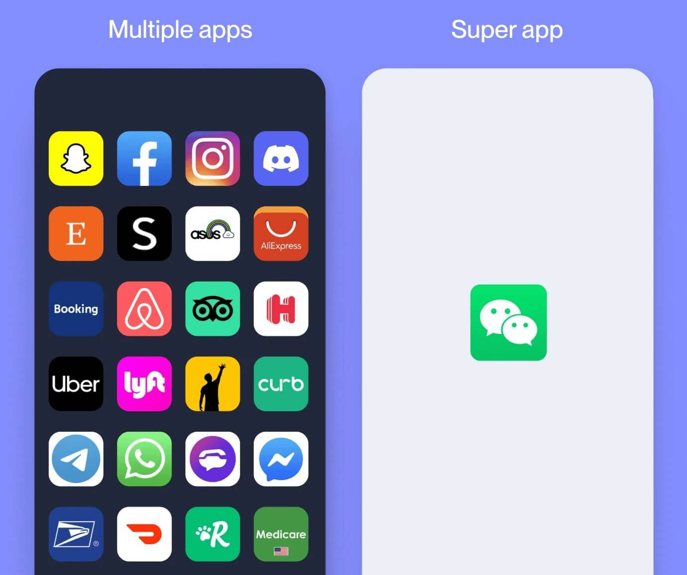
Two phones side by side: Multiple apps, a home screen of thirty icons, versus Super app, a single icon
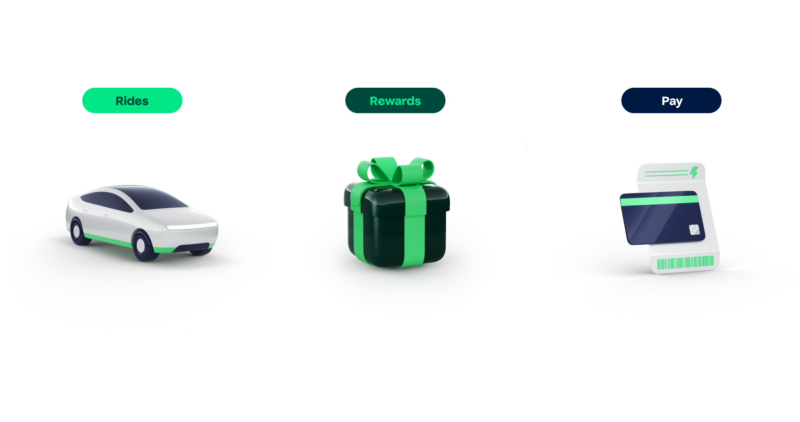
Three labelled 3D objects: Rides as a car, Rewards as a gift box, Pay as a card terminal

Three dark feature cards in a row: Revolut BillPay, Card Transfers, Flexible Cash Funds, each with a 3D object above its description
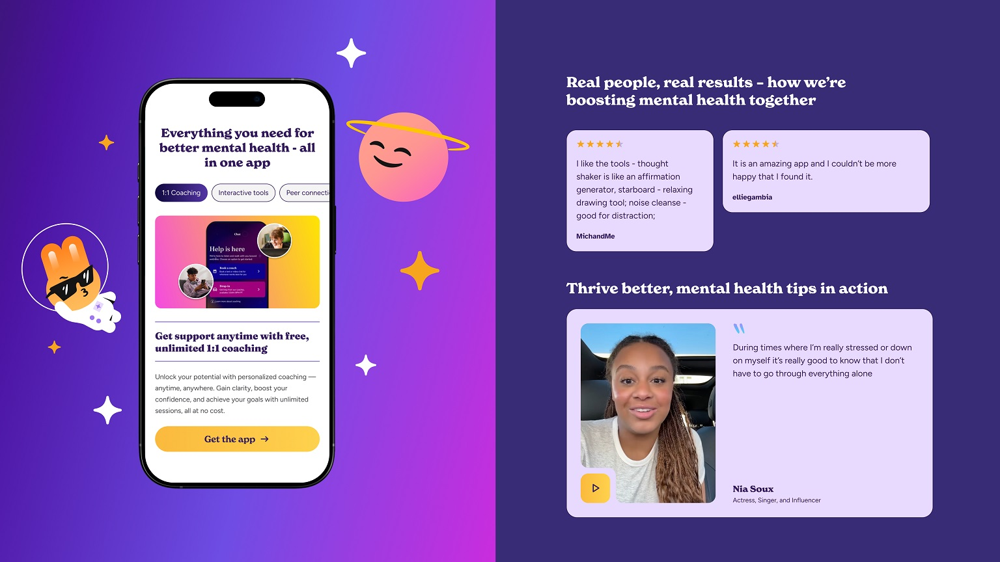
Everything you need for better mental health, all in one app

Watch face at the centre with four metric bubbles arranged around it

Five labelled 3D objects: Send Money, Request Money, Global Transfer, Scan Pay, Split Bills
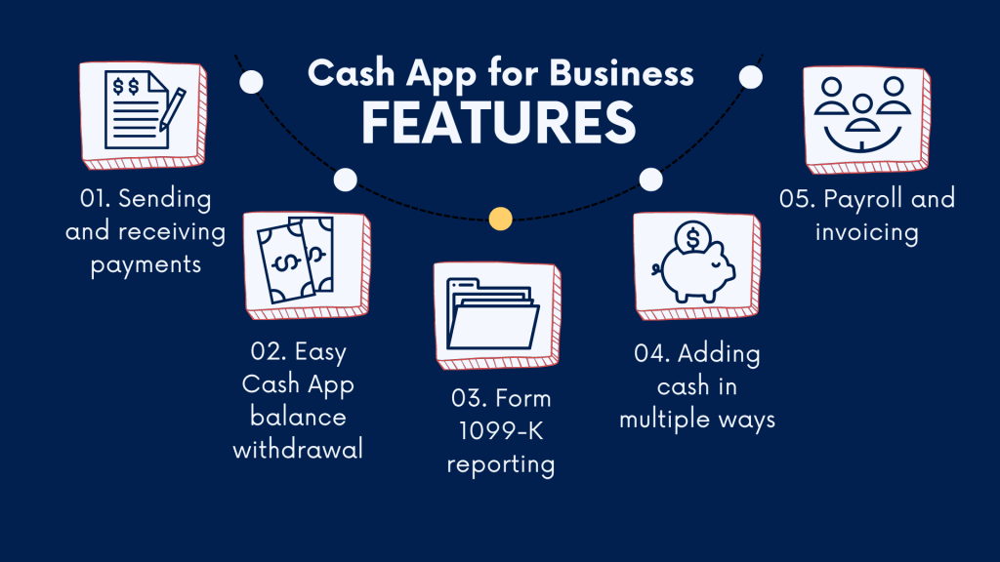
Five numbered features arranged on an arc: sending and receiving payments, balance withdrawal, Form 1099-K reporting, adding cash, payroll and invoicing
Isometric scene with a phone, a card, a storefront and floating brand tiles (Venmo, GL, go, cash mark) around a small plinth

Gmail, Docs, food and Google icons floating in soft focus around the Gemini wordmark
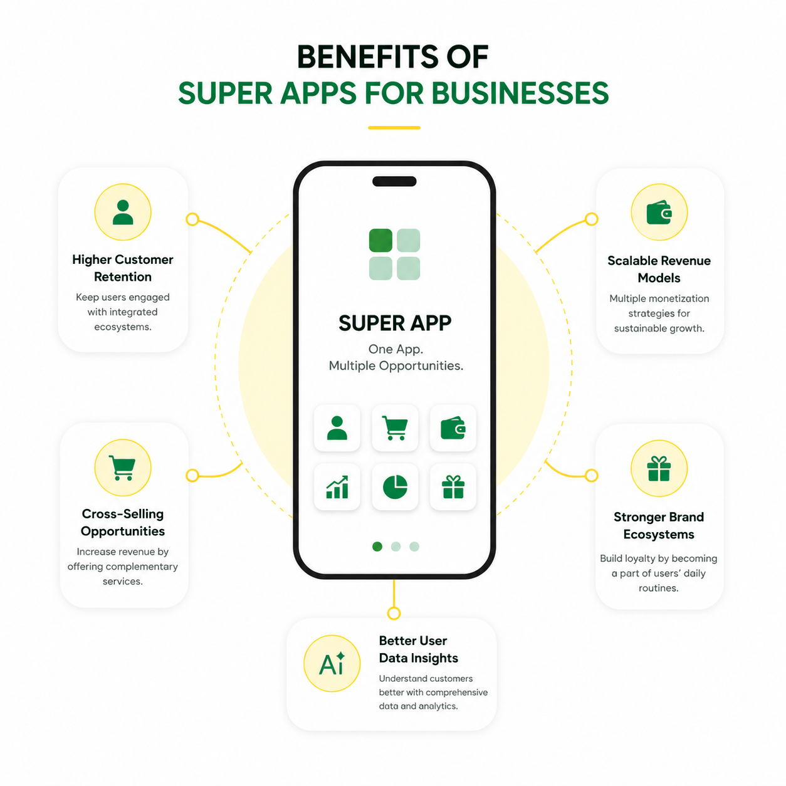
Central phone reading SUPER APP, One App. Multiple Opportunities, with five benefit cards around it
Central phone in hand with five labelled callouts radiating: Blockchain, Expense Analyzers, Cardless ATM Access, Wearables, 5G Technology
Central phone with five feature cards stacked down the right: Multi-Currency, International Transfers, Investing, Budgeting, Top-Notch Security
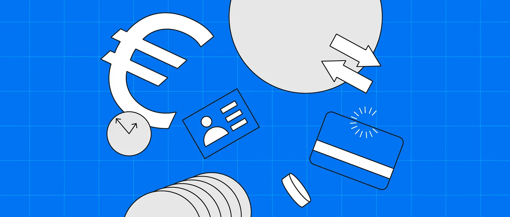
Euro symbol, payment card, ID card, coin stack and arrows floating on a blue grid around a central point
A 3D character surrounded by floating service objects: music notes, photos, news sheet, microphone, watch, sparkles

Six Apple service icons floating in a loose two row cluster: Music, TV, Arcade, News, Fitness, iCloud
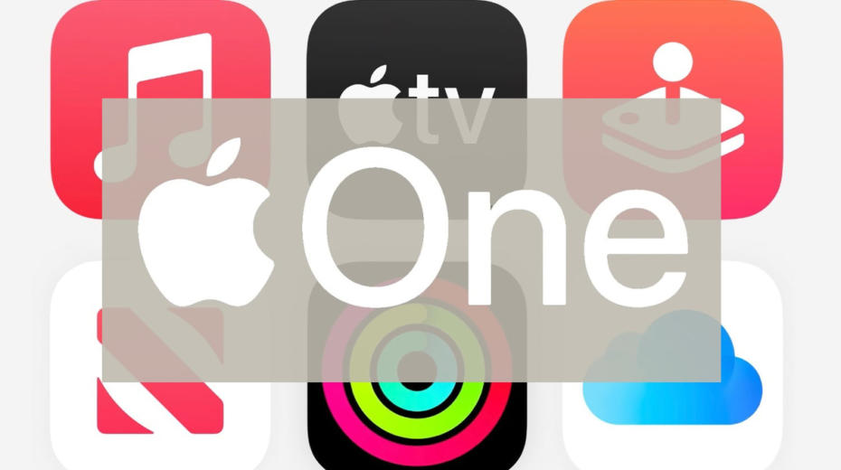
The Apple One wordmark laid over six service icons arranged behind it

Central phone, six service nodes on pedestals (Food, Rides, Bike, Pay, Quik, Cleaning) joined by curved lines

Six circular icons for the key factors of an on demand app: simple to update, user friendly, cost efficient, secure payments, fast delivery, digitalisation
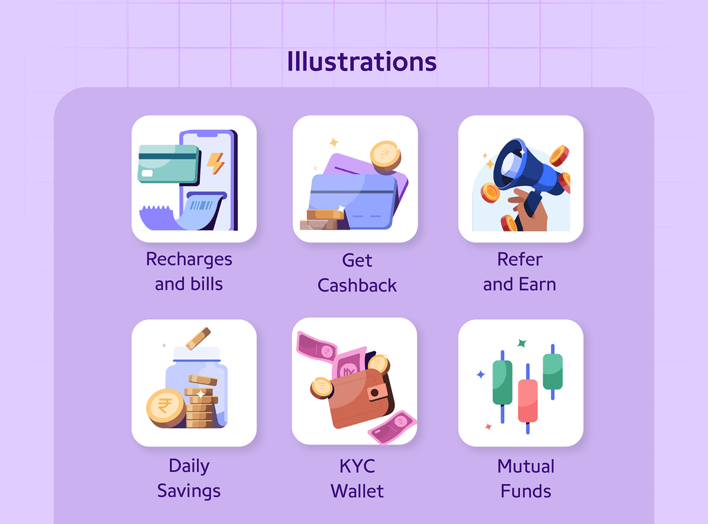
Six illustrated feature tiles: Recharges and bills, Get Cashback, Refer and Earn, Daily Savings, KYC Wallet, Mutual Funds
Violet 3D UI panels, a search field, a shield and a settings gear floating in layers around a central card
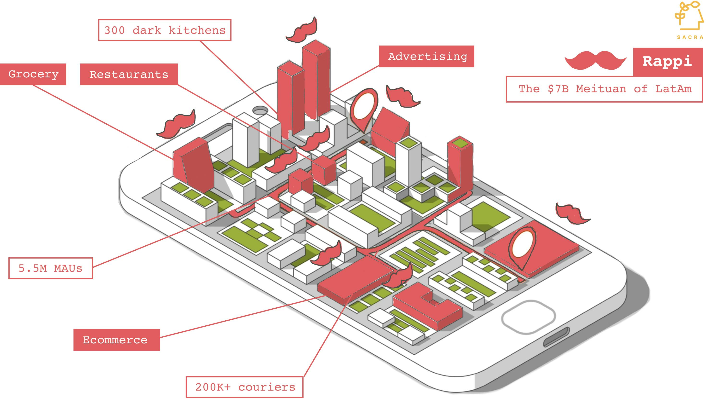
Isometric city built on a phone with service metrics pinned to districts

Services arranged around a clock face by hour of day: 9am GoRide, 12pm GoFood, 2pm GoSend, 3pm train ticket, 5pm GoCar, 9pm bill payments, 10pm donation

Soft translucent 3D shapes scattered on a desk surface, each a rounded app icon form, from the WWDC25 icon session
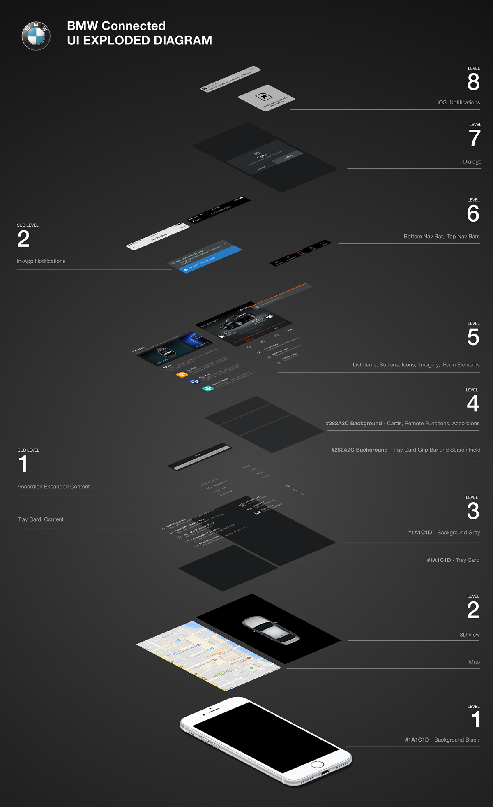
Eight numbered UI layers stacked in exploded perspective above the device
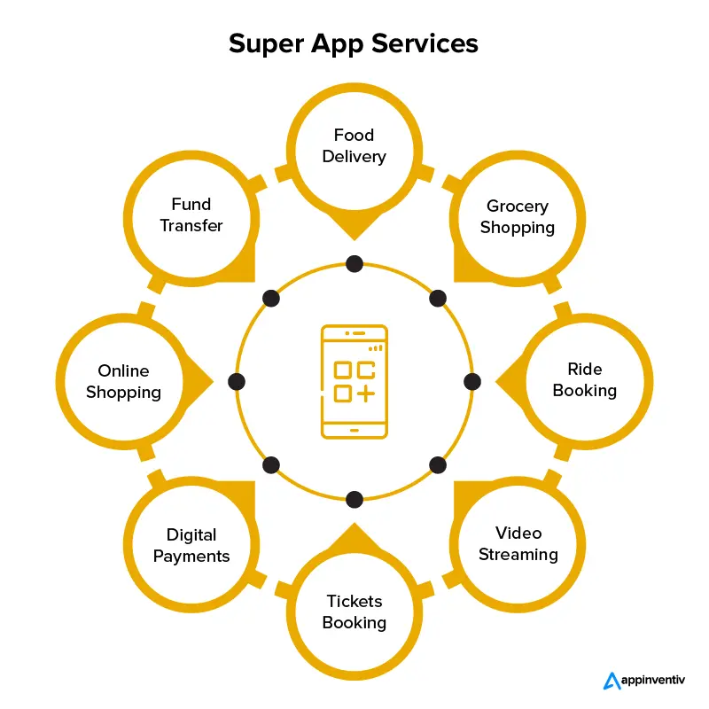
Central phone, eight services evenly spaced on a clean ring: Food Delivery, Grocery Shopping, Ride Booking, Video Streaming, Tickets Booking, Digital Payments, Online Shopping, Fund Transfer

Phone centre reading All in one App with eight service icons on the screen
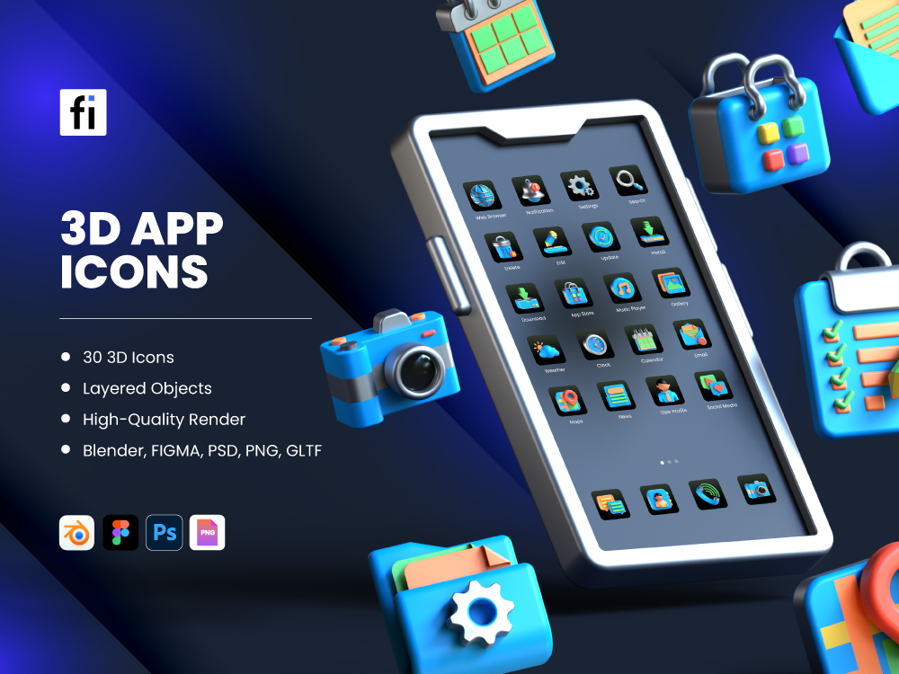
A phone showing an icon grid, with eight 3D app icons (camera, lock, calendar, settings, shopping, folder) floating off it in depth

Isometric landscape with GoRide, GoSend, GoPay, GoFood, GoMED, GoMART, GoMASSAGE and GoCAR as places in a small world built on a phone

Google and Proton app icons floating as soft 3D tiles around a central pair of larger icons, in depth
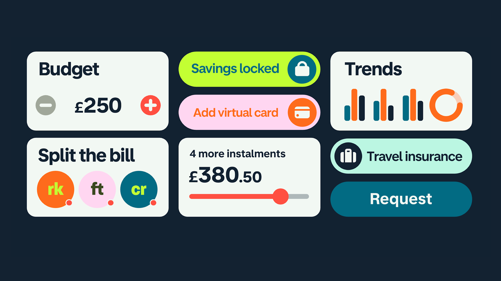
Eight Monzo feature chips laid out as a loose grid: Budget 250 pounds, Savings locked, Add virtual card, Trends, Split the bill, 4 more instalments, Travel insurance, Request
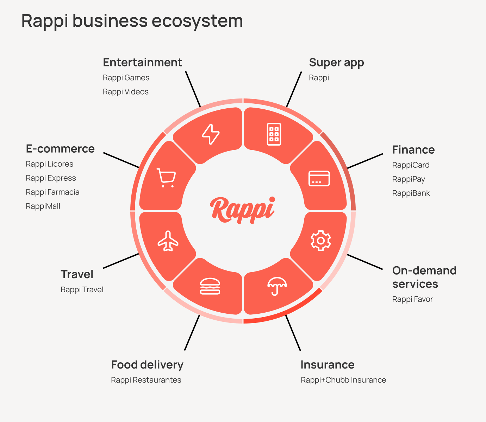
Eight segment donut: Entertainment, Super app, Finance, On-demand services, Insurance, Food delivery, Travel, E-commerce, each naming its sub brands outside the ring

Glassy iridescent 3D objects (hourglass, bell, heart, coins, shopping bag) tumbling around the words 3D ICONS Made for Wise
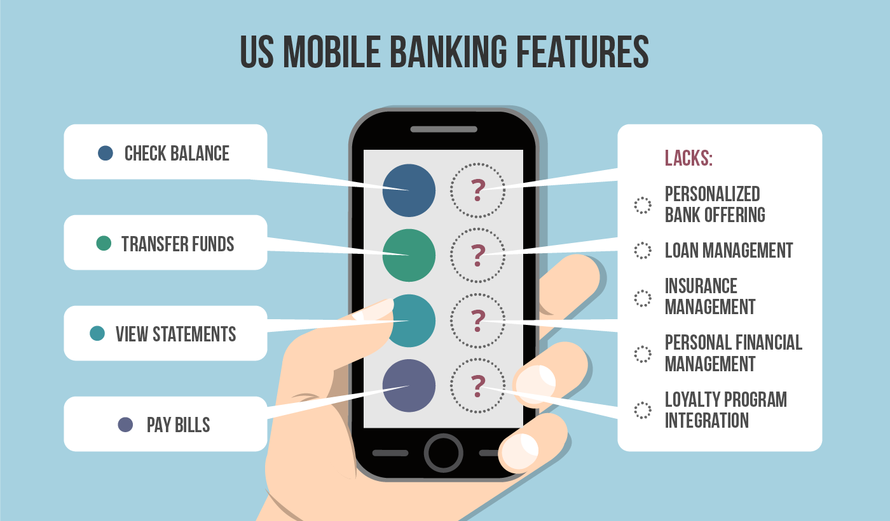
Central phone in hand, four current features listed left and five missing ones listed right

Central phone with nine features on arrows: user dashboard, digital assistants, payment gateway, customisation, action confirmation, security, automation, QR and card scanning, push notifications

Soft 3D objects floating around the Apple Services wordmark: football, card, book, remote, joystick, cloud, microphone, App Store mark, music note, baseball
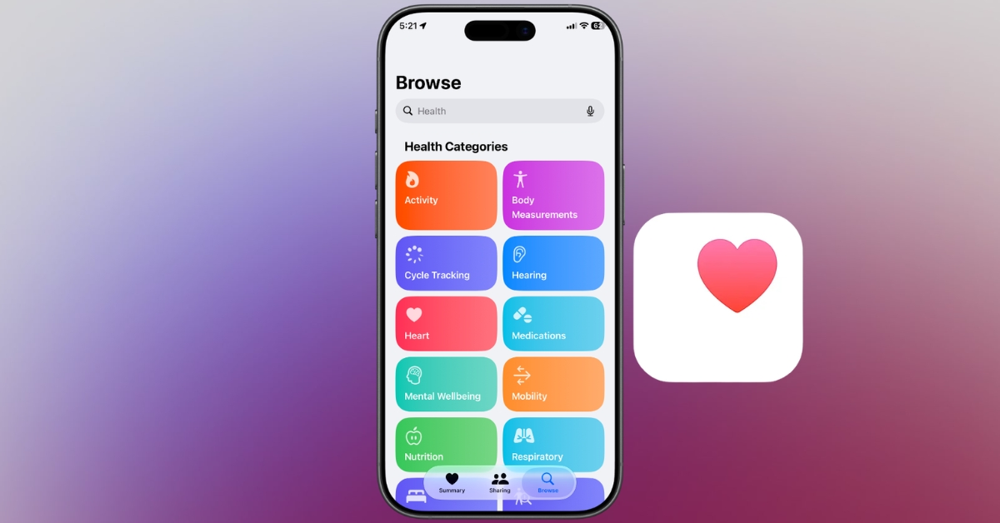
Browse screen with ten coloured health category tiles: Activity, Body Measurements, Cycle Tracking, Hearing, Heart, Medications, Mental Wellbeing, Mobility, Nutrition, Respiratory
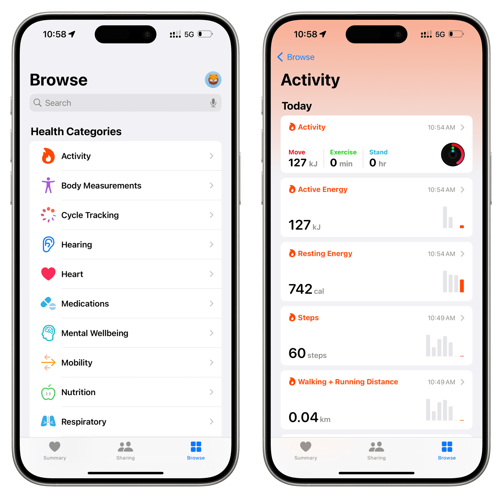
Browse categories beside the Activity detail view
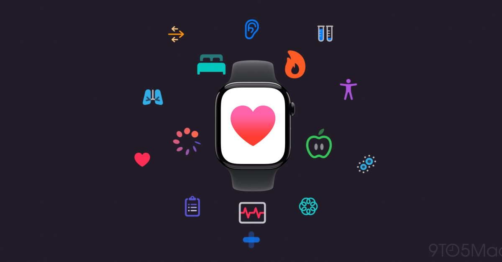
Apple Watch at the centre showing a heart, ringed by health icons: ear, lungs, apple, blood vial, bed, activity figure, clipboard, ECG trace, virus, medication
Isometric scene with app panels, coins and cards floating in layers
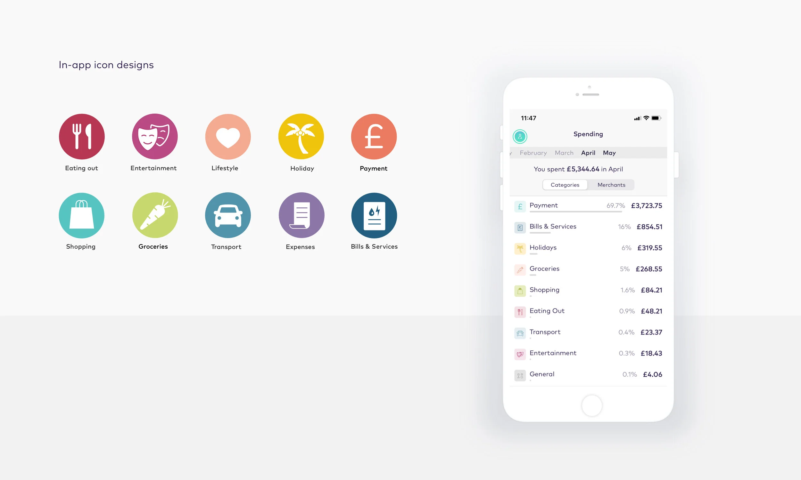
Ten coloured category icons (Eating out, Entertainment, Lifestyle, Holiday, Payment, Shopping, Groceries, Transport, Expenses, Bills and Services) shown beside the spending screen they appear in
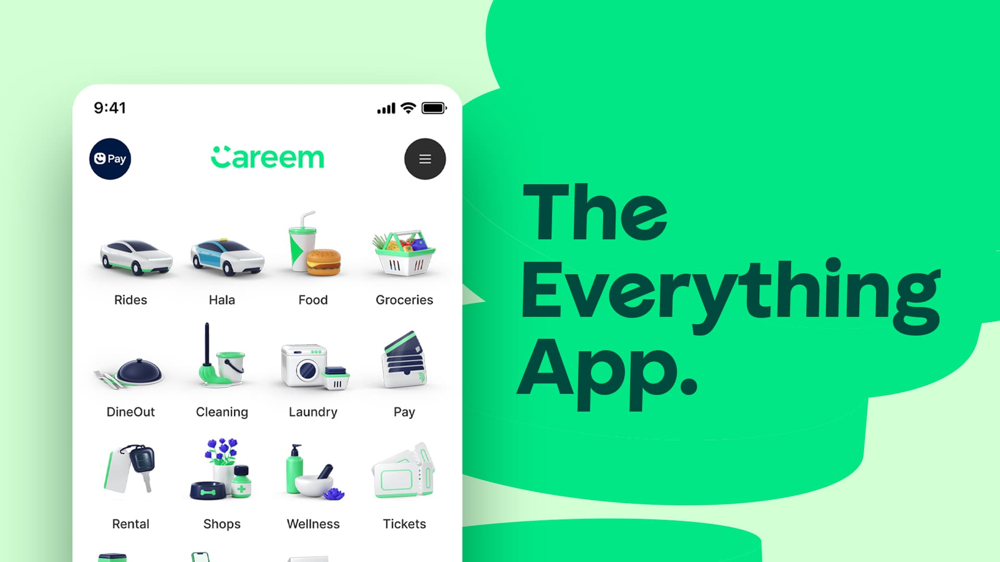
Phone at left showing a twelve icon service grid: Rides, Hala, Food, Groceries, DineOut, Cleaning, Laundry, Pay, Rental, Shops, Wellness, Tickets
Central phone with services branching left (Scan and Pay, Payments, Wallet, Bill Payments, UPI) and right (Paytm Money, Investments, Lending, Banking, Insurance, Credit Cards), under the line EVERY FINANCIAL NEED, ONE APP
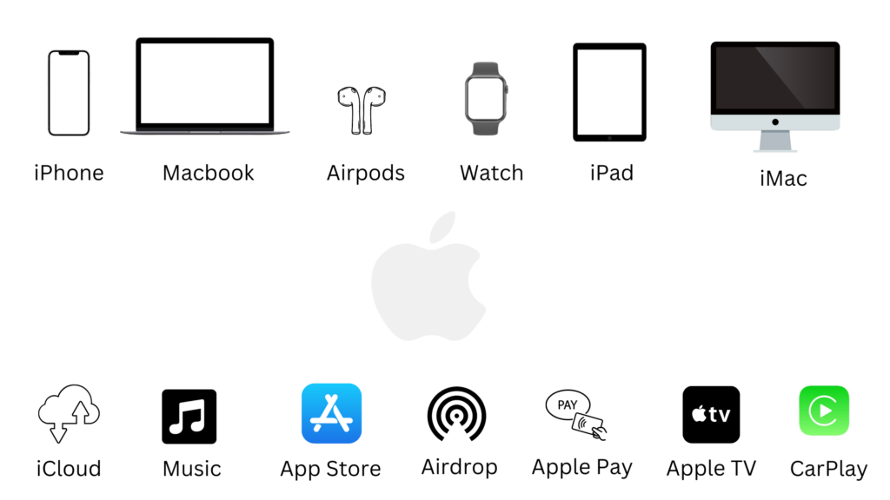
Six devices across the top (iPhone, Macbook, Airpods, Watch, iPad, iMac) and seven services beneath (iCloud, Music, App Store, Airdrop, Apple Pay, Apple TV, CarPlay), split by the Apple mark

Central phone with sixteen brand logos radiating outward in a red splash

Central logo with sixteen services on plain spokes: tickets, auto, beauty, bill payment, parcel, home maintenance, video, laundry, mobile data, repairs, pharmacy, groceries, food, payments, ride hailing, banking, massage

Eighteen labelled service icons then the line and much more

The Revolut Hub screen, a full grid of roughly twenty labelled service icons, shown beside two supporting screens

Concentric rings around the devices: an inner ring of software infrastructure, an outer ring of applications and services, populated with real app icons

A dense sphere of app icons erupting out of a phone screen